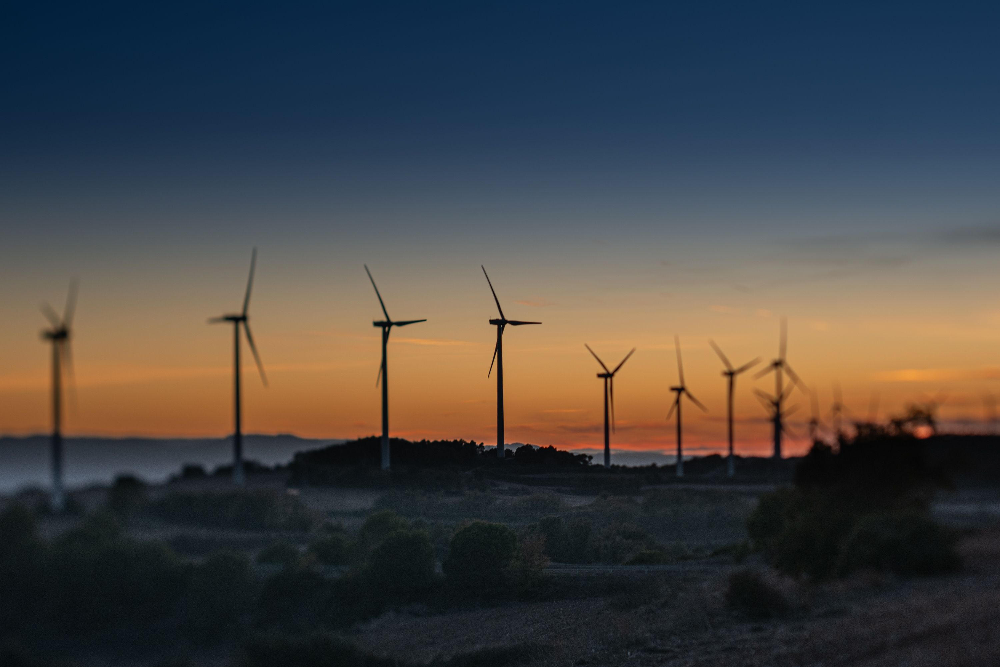
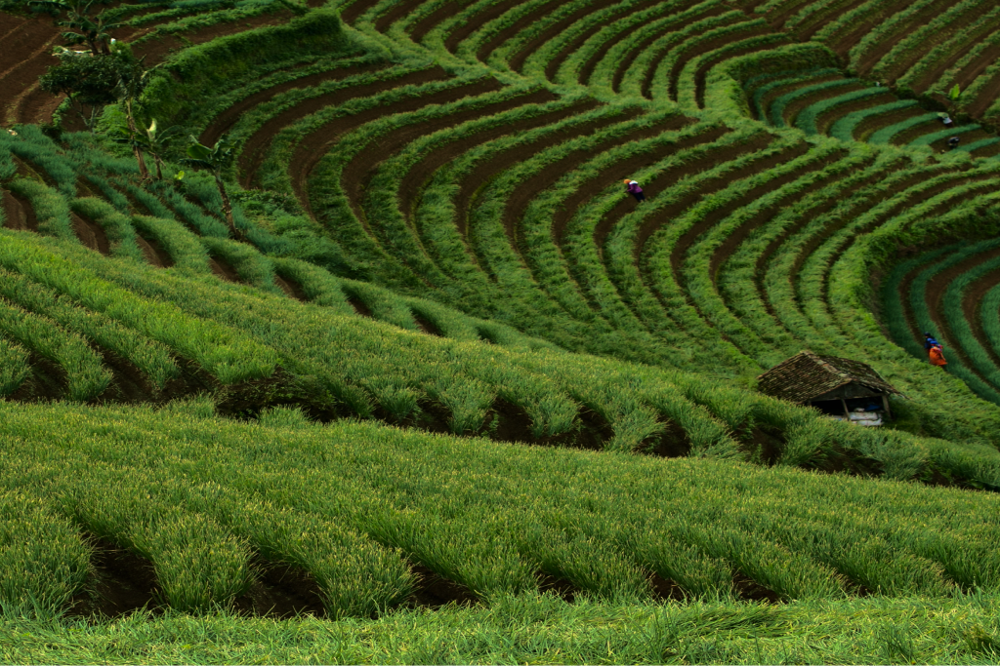

A Snapshot of Global Climate Action
The Yearbook 2026 highlights the latest trends and stories from across the Global Climate Action Agenda, showcasing opportunities and the stakeholders driving change as we move full-on towards the implementation of the Paris Agreement goals.
6
thematic axes
30
objectives
XX
key number (TBC)
XX
key number (TBC)
Explore the Yearbook
Six Thematic Axes. 30 solution-focused objectives.
The pillars of the Action Agenda cover efforts across mitigation, adaptation, finance, technology and capacity-building.

Axis 1 Transitioning Energy, Industry, and Transport Axis 2 Stewarding Forests, Oceans and Biodiversity
Axis 3 Transforming Agriculture and Food Systems Axis 4 Building Resilience for Cities, Infrastructure and Water Axis 5 Fostering Human and Social Development Axis 6 Unleashing Enablers and Accelerators, including on Finance, Technology and Capacity Building